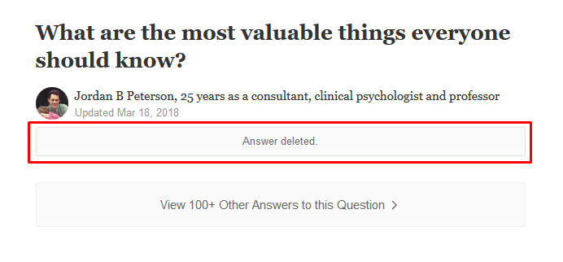

The book grew out of Peterson's hobby of answering questions posted on Quora, the one being "What are the most valuable things everyone should know?"; his answer, subsequently deleted, comprised 42 rules.
The success of the list and praise received from the commentators it's what induced him in expanding on his original answer to give us his newest book. Here is the original list.
- Tell the truth.
- Do not do things that you hate.
- Act so that you can tell the truth about how you act.
- Pursue what is meaningful, not what is expedient.
- If you have to choose, be the one who does things, instead of the one who is seen to do things.
- Pay attention.
- Assume that the person you are listening to might know something you need to know. Listen to them hard enough so that they will share it with you.
- Plan and work diligently to maintain the romance in your relationships.
- Be careful who you share good news with.
- Be careful who you share bad news with.
- Make at least one thing better every single place you go.
- Imagine who you could be, and then aim single-mindedly at that.
- Do not allow yourself to become arrogant or resentful.
- Try to make one room in your house as beautiful as possible.
- Compare yourself to who you were yesterday, not to who someone else is today.
- Work as hard as you possibly can on at least one thing and see what happens.
- If old memories still make you cry, write them down carefully and completely.
- Maintain your connections with people.
- Do not carelessly denigrate social institutions or artistic achievement.
- Treat yourself as if you were someone that you are responsible for helping.
- Ask someone to do you a small favour, so that he or she can ask you to do one in the future.
- Make friends with people who want the best for you.
- Do not try to rescue someone who does not want to be rescued, and be very careful about rescuing someone who does.
- Nothing well done is insignificant.
- Set your house in perfect order before you criticize the world.
- Dress like the person you want to be.
- Be precise in your speech.
- Stand up straight with your shoulders back.
- Don't avoid something frightening if it stands in your way -- and don't do unnecessarily dangerous things.
- Do not let your children do anything that makes you dislike them.
- Do not transform your wife into a maid.
- Do not hide unwanted things in the fog.
- Notice that opportunity lurks where responsibility has been abdicated.
- Read something written by someone great.
- Pet a cat when you encounter one on the street.
- Do not bother children when they are skateboarding.
- Don't let bullies get away with it.
- Write a letter to the government if you see something that needs fixing -- and propose a solution.
- Remember that what you do not yet know is more important than what you already know.
- Be grateful in spite of your suffering.